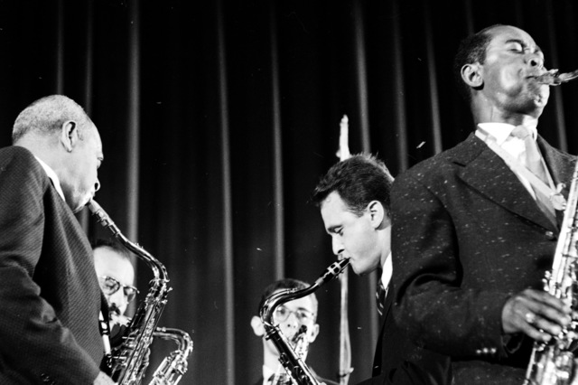

Estilos
- Rock Clássico: Bandas seminais do rock que perpassam décadas. Alguns dos principais nomes:
- The Beatles
- Pink Floyd
- Deep Purple
- Led Zeppelin
- Black Sabbath

- Jazz:Estilo surgido no final do século XIX e ínico do século XX no sul dos EUA. O ínicio foi marcado pela mistura de elementos eruditos e música popular, feita majoritariamente por negros. É sinônimo de vanguarda musical.Alguns dos principais nomes
- Miles Davis
- Charlie Parker
- Benny Goodman
- John Coltrane
- Thelonius Monl

Voltar á pagina inicial